10月20日：プログラミング生放送勉強会 第54回＠熊本 に参加してきました
公開日：
今週は本当にダルくてブログを書く気力が起きなかったのだけど、ちゃんと書くまでが勉強会なので！ 熊本での勉強会は、今回で2回目。2年ぶりなのかな？ 松山みたいに定着してくれたらうれしいかなーと思ってたんだけど、それはちょっと厳しいみたいで参加者はあまり多くありませんでしたが、個人的には色々楽しめました。
出発（松山 → 福岡 → 熊本）
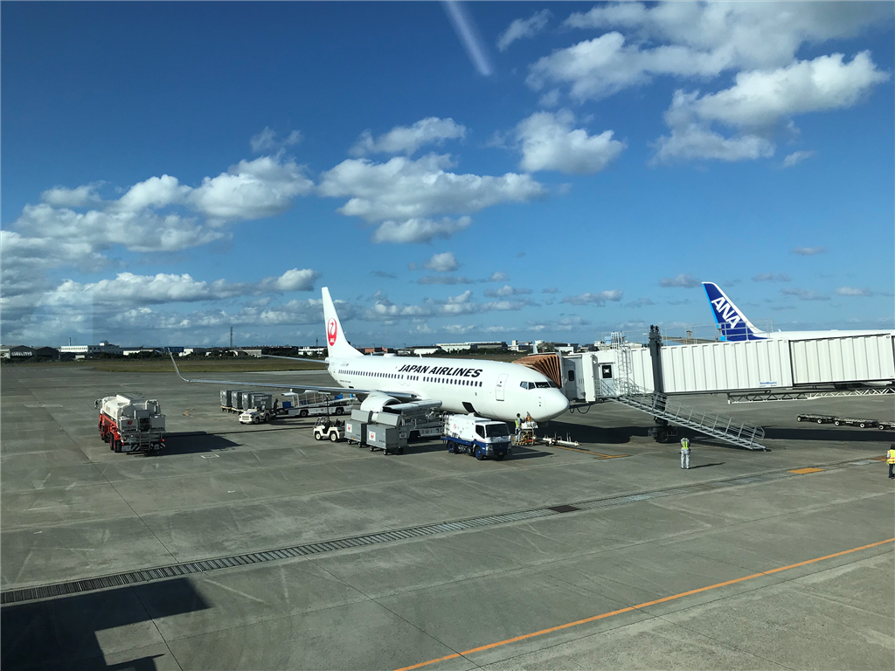
前回はフェリーを使ったのですが、今回は飛行機。松山 → 熊本の直行便はないので（昔はあったらしい？ 天草エアライン）、福岡で乗り換えです。
往復割引切符を使っても片道2万円以上するし（これに加えて新幹線代がかかる！）、宿は手ごろなビジネスホテルがとれないしで、結構な出費になっちゃいましたが――まぁ、やっぱり船よりはらくちんですね。松山も福岡も空港が町から近いし、7時半過ぎに家を出て9時の飛行機に乗り、10時に福岡着。10時半の新幹線に乗って、11時半前には熊本についちゃいました。家を出るのは8時でも大丈夫なので、3時間半ってところですか。
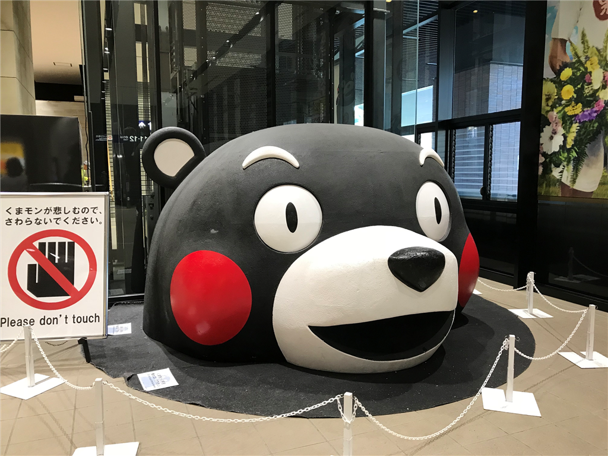
お久しぶり、くまモン！ 熊本駅は改修工事中みたいで、最初は市電の駅がわからなくて少し迷いましたが、くねくねとした臨時通路を抜けると見覚えのあるしゃもじ屋根（？）が出迎えてくれました。
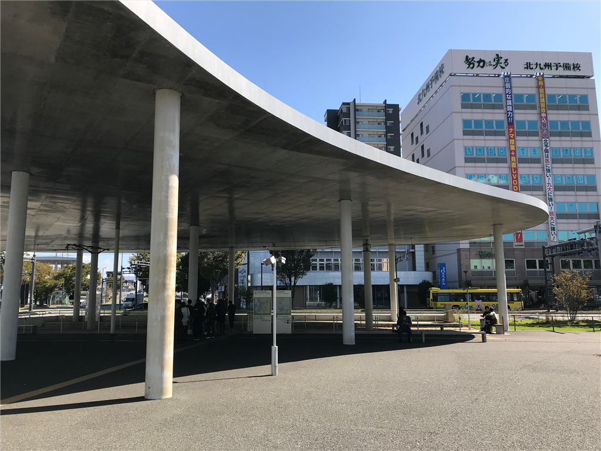
熊本市西区のＪＲ熊本駅の東口広場整備計画見直しに伴い、同駅と熊本市電の熊本駅前電停を結ぶしゃもじ型の鉄筋コンクリート製屋根（約１０００平方メートル、高さ約６メートル）が、駅ビルが完成する２０２１年春までに解体される。白い雲をイメージした屋根は県が２０１０年３月に約３億円をかけて整備したが、熊本地震を受けて防災機能を強化するため約１０年で役目を終えることになり、市民からは「もったいない」と惜しむ声も出ている
これ、3億円もしたのかよｗｗｗ
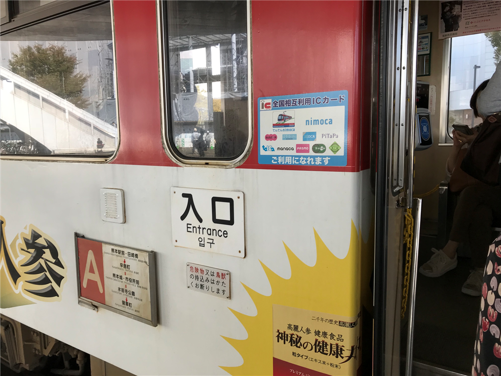
ちなみに、熊本の電車は SUICA がそのまま使えるようです（罠もあるとかないとか）。松山も SUICA 使えたら楽なのになぁ……。
会場（熊本市国際交流会館）
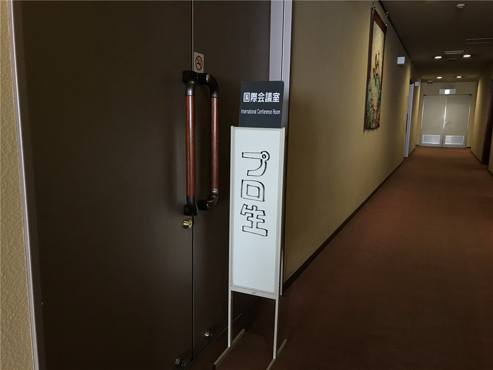
今回の会場は、熊本市国際交流会館。市電に乗り、花畑町でおります。熊本の市電は、熊本駅からみて Y の字に伸びていて、A 系統と B 系統の2種類があるらしい。地元の人でもたまに間違えるらしいのだけど、前回と同じ「健軍町行き」に乗れば大丈夫でした。健軍町って名前からしてたぶん、あの名高き熊本師団のある（あった）ところなんだろうな。
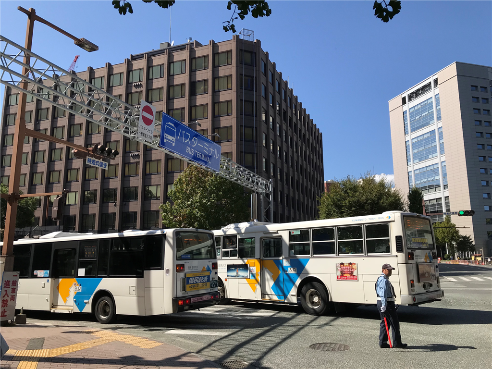
それにしても、熊本はバスの多い街ですね。なんかバス専用の広い道まであるし。なぜか道の左端にバスが「右折」（！？）するための専用レーンがあって、信号が変わるとそこから次々とバスが駆けていくさまは、最初見たときビックリするやら、関心するやらでした。
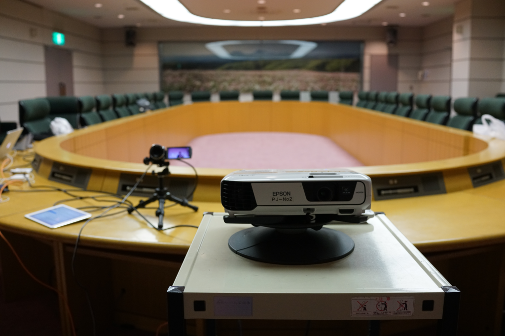
会場は立派な、なんかちょっといい感じの学会や会議ができそうな部屋でした。ちょっと古くて、マイクはあるのに電源はないみたいなチグハグさはありましたが（電源の利用にはお金かかるっぽい）、椅子が割とよくて、持って帰りたかったです。いっぱい余ってたし。
セッション
プロ生勉強会 第54回@熊本 https://t.co/8jKGVhcL5Q
— プロ生ちゃん（暮井 慧）＠コラボ募集中 (@pronama) 2018年10月20日
勉強会の内容はこちらから見ることができます。
個人的には山之内さんが教えてくれた UwpDesktop NuGet が最大の収穫でした（← おい、それでいいのかよ！）。WPF から windows.md を参照するのっていろいろ面倒くさいけど、そういうのをよし何やってくれるらしい。今度使ってみよう……。
あ、Bluetooth をつないでみた話も面白かったですよ。ライブラリの紹介もそうだけど、いろいろ禁止されてるといろいろ大変だなって感じが……。
あと、greenz さんのOSSを利用した Android App の脆弱性検知の話や、You&I さんの Cybersecurity Framework の紹介も興味深かったです。セキュリティ関係が耳学問できるチャンスは逃したくないなー。
おやつ
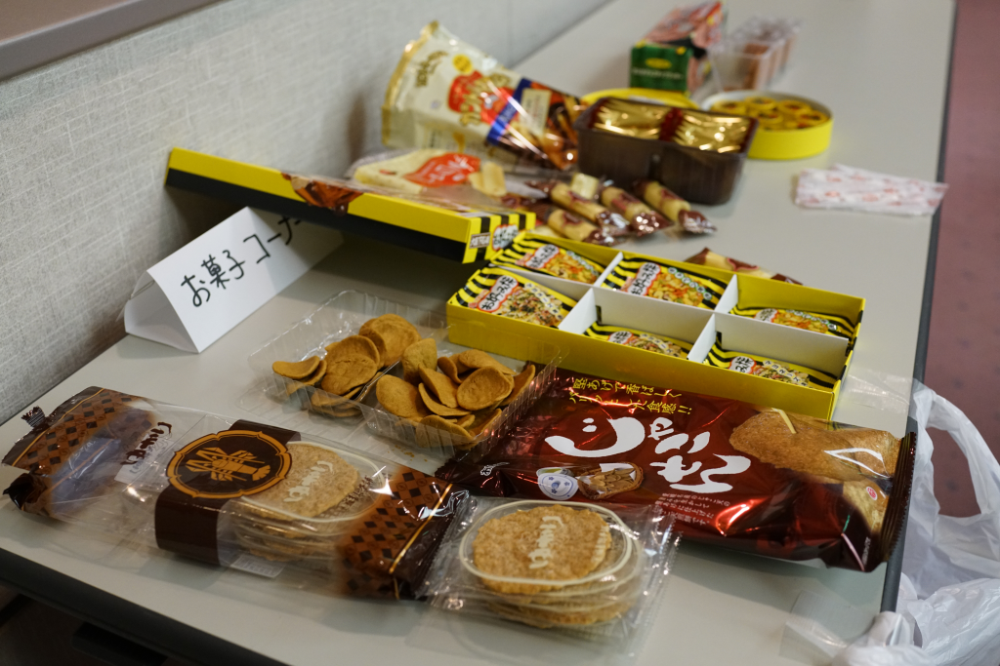
プロ生といえば、各地より持ち寄られるおやつですよね。今回はお好み焼きせんべいが割とおいしかったです。あと、なんかちょっと食べにくいけどおいしい奴があったんだが、名前忘れた……。
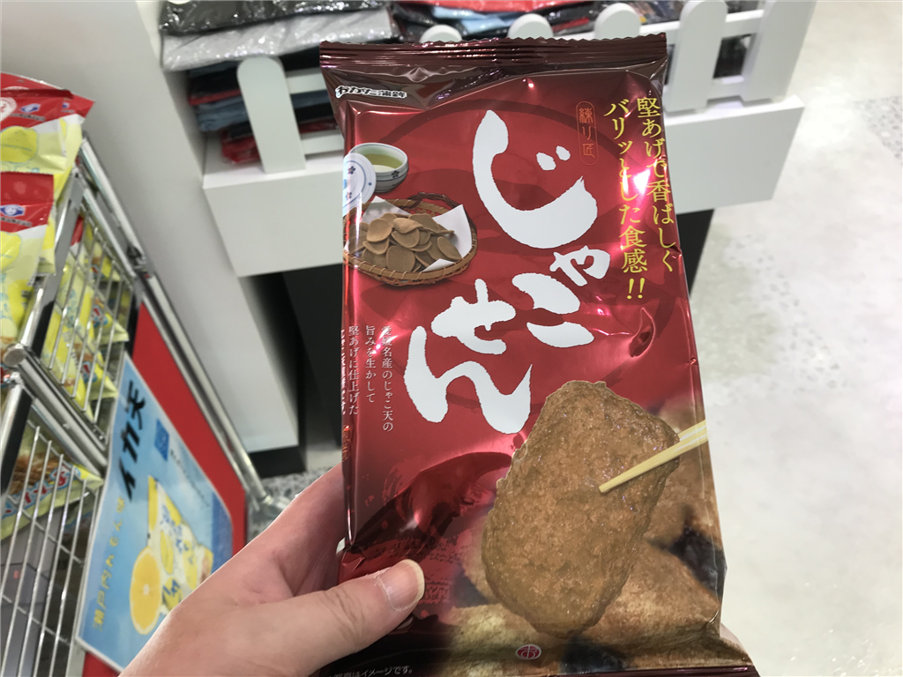
ちなみに、僕は空港でたまたま目にした「じゃこせん」を買っていきました。じゃこ天をせんべいにしたっぽいですが……最後から2番目にやっと売り切れたところを見ると、それほど美味しくはないのかもしれない。
懇親会
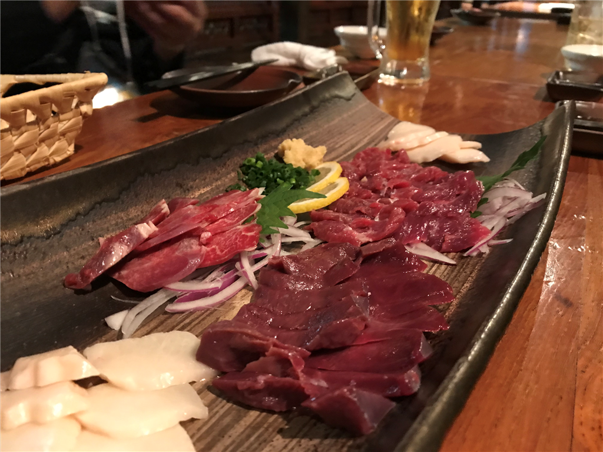
今回はあまり人数が多くなかったので、事前にお店の予約をせず、適当な地元のチェーン店に入りました。チェーン店といっても地元のものメインで、なかなかおいしかったです。馬の肉、うまー。からしレンコンは前回食べたのよりパンチがあっておいしかった。やっぱり、バシッと辛い方がおいしいよね！
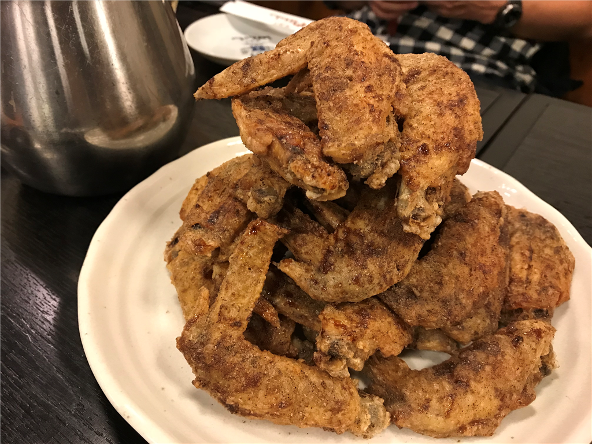
2次会はなぜか「世界の山ちゃん」でした。@jz5 のセッションで VR が取り上げられたこともあり、話題はセキュリティや医療の話から VR へ。その場のノリで Oculus Go を注文してしまいました。その辺の話は、また改めて。
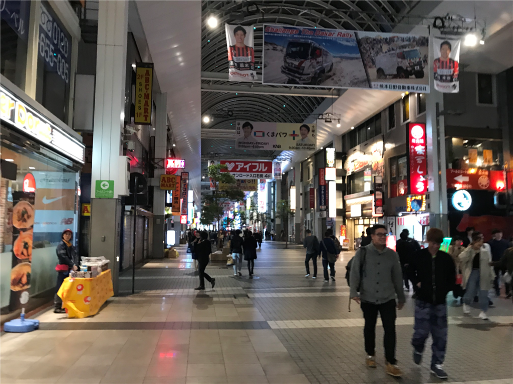